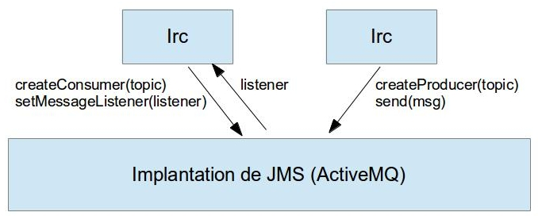

Cours Systèmes Communicants
ENSEEIHT – Département Informatique – 2ième année
TP JMS
Daniel Hagimont
Daniel.Hagimont@enseeiht.fr
L'objectif de ce TP est de programmer une application répartie en utilisant une implantation de l'interface JMS vue en cours.
2. Spécification
L'objectif est la gestion d'un Forum de discussion pouvant faire intervenir un nombre quelconque d'intervenants utilisant une application Irc. Chaque Irc peut émettre des messages qui sont diffusés à l'ensemble des Irc. Les messages ne sont pas mémorisés par le Forum. Seuls les Irc présents sur le Forum reçoivent les messages émis. Pour émettre, un Irc doit être connecté au Forum.
Nous considérons les opérations suivantes :
Connect : permet à un Irc de se connecter au Forum.
Leave : permet à un Irc de se déconnecter du Forum.
Write : permet à un Irc d'émettre un message.
Who : permet à un Irc de connaître l'ensemble des intervenants connectés au Forum.
Nous utilisons JMS en mode Publish/Subscribe.

L’application est composée du fichier Irc.java qui inclut l'interface graphique de l'application, que vous devez compléter pour faire marcher l'application avec JMS.
Un petit exemple (HelloTopic.java) vous est donné pour démarrer.Pour utiliser activeMQ
(l'implantation de JMS) :
1) commencez par coder les
opérations de connexion, emission et réception de messages
2) implantez une solution gérant la liste des intervenants
connectés
3) rajouter des connexions "durables" : si vous quitter Irc et que
vous vous reconnectez plus tard, vous recevez les messages émis
pendant votre absence.